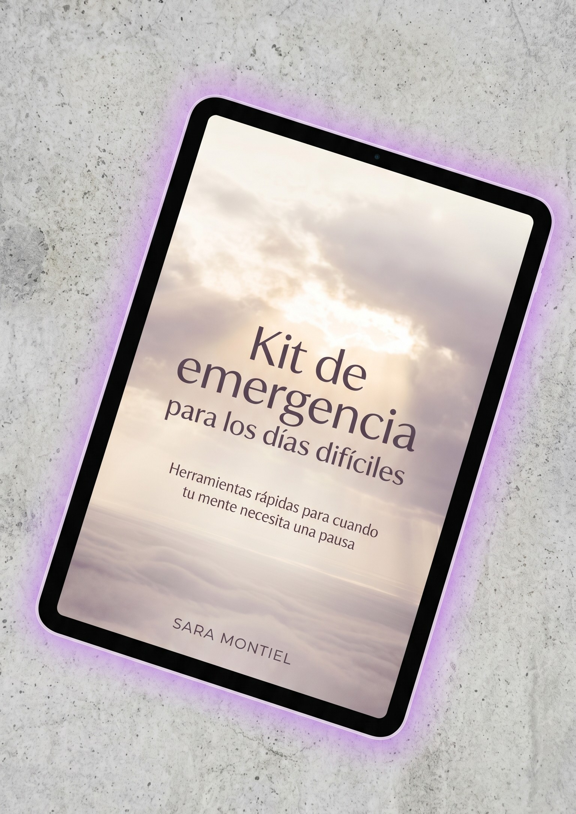

Miles de personas viven agotadas por pensamientos que no pueden apagar. Este ebook te ayudará a comprender lo que ocurre en tu mente, dejar de luchar contra cada pensamiento y recuperar la calma paso a paso.
"Analizo cada conversación mil veces buscando errores que probablemente solo yo noto."
"Mi mente se enciende justo cuando apago la luz, repasando pendientes y miedos del futuro."
"Paso horas imaginando problemas futuros y buscando soluciones para situaciones que ni siquiera han ocurrido."
Por qué el silencio exterior suele activar nuestro ruido interior más profundo.
Cómo el intento constante de controlar todo termina alimentando la ansiedad.
Por qué tu mente crea escenarios futuros y cómo dejar de vivir en ellos.
El agotamiento mental que aparece incluso cuando tu cuerpo intenta descansar.
Aprender a volver al presente cuando tu mente viaja constantemente hacia lo peor.
La carga emocional de aparentar que todo está bien cuando no lo está.
Reconoce los disparadores que inician tu ciclo de sobrepensamiento.
Comprende por qué tu mente actúa así y deja de sentir que estás luchando contra ti.
Deja de castigarte por sentirte cansado, ansioso o emocionalmente agotado.
Aprende herramientas sencillas para salir del futuro y regresar al momento actual.

Un complemento práctico del ebook principal con ejercicios y herramientas que podrás usar en momentos reales de ansiedad, sobrepensamiento o agotamiento emocional.
Valor estimado: 7.99 USD • Incluido gratis con tu compra
Tiendes a sobrepensar cada pequeña decisión o interacción social.
Sientes una ansiedad leve pero constante que te quita energía.
Te sientes mentalmente agotado y no entiendes por qué tu mente no descansa.
Buscas una "solución mágica" que elimine la ansiedad sin reflexión.
Esperas que un libro cambie tu vida sin poner nada de tu parte.
No tienes interés en comprender tus emociones o trabajar en ellas.
No necesitas estar pasando por una crisis para beneficiarte de este libro. Muchas personas lo leen simplemente porque están cansadas de vivir con ruido mental constante.
Acceso inmediato. Léelo a tu ritmo, desde cualquier dispositivo.
Recibirás un correo con el enlace de descarga inmediatamente después del pago. Compatible con Kindle, iPad y móviles.
"Escribí este libro para la persona que necesitaba escuchar que no tenía que resolverlo todo hoy."
Autora de "Cuando mi mente no se calla". A través de una escritura cercana, humana y reflexiva, comparte herramientas, ideas y experiencias destinadas a ayudar a quienes viven atrapados en el sobrepensamiento, la ansiedad cotidiana y el agotamiento mental. Su objetivo es recordar que la calma no siempre llega cuando intentamos controlar todo, sino cuando aprendemos a comprendernos mejor.
Si tienes preguntas sobre el ebook, puedes escribirme directamente.
Si llevas demasiado tiempo viviendo con pensamientos que no se detienen, este ebook puede ayudarte a comprenderlos, enfrentarlos con más calma y recuperar poco a poco tu bienestar emocional.
Pago seguro • Acceso inmediato • Formato PDF